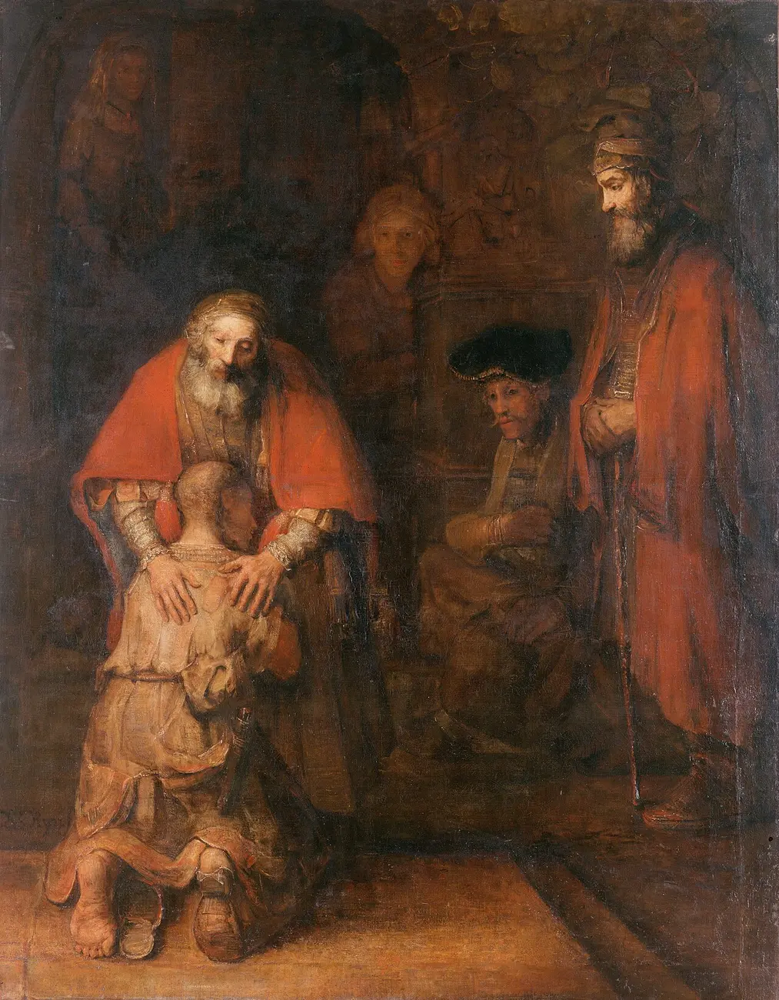

"Those who approach the sacrament of Penance obtain pardon from God's mercy for the offense committed against Him, and are, at the same time, reconciled with the Church which they have wounded by their sins."
In the Sacrament of Reconciliation, we approach God understanding how sin has hurt our soul and ask for His love and mercy. Confession helps us acknowledge our sinfulness, receive God's forgiveness, and labor — by charity, example, and prayer — for the conversion of others.
— Catechism of the Catholic Church, 1422
Saturdays from 10:00 – 11:00 am at the parish.
For alternate times, please call Father Randall at 903-821-7511.